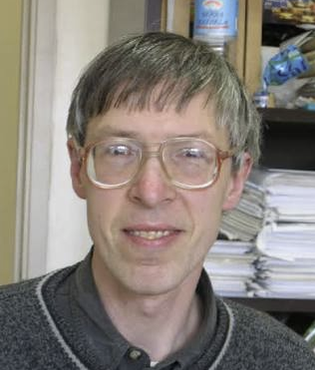
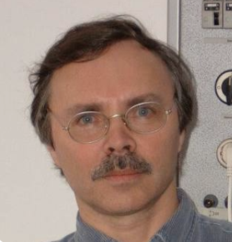
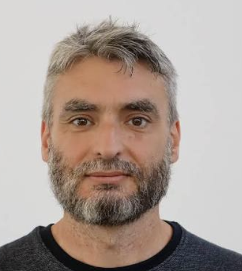
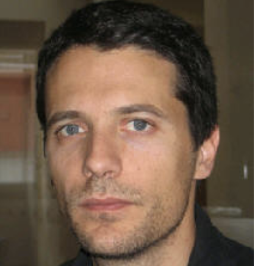

Research
Summary of Statistics
Live data from Google Scholar & Semantic Scholar.
(last updated: September 2026)
200+
PUBLICATIONS
50+
H-INDEX
26,000+
CITATIONS
1,100+
HIGHLY INFLUENTIAL CITATIONS
3
ERDŐS NUMBER
Citations per year · Google Scholar Profile · 2026 in progress
Interactive Analytics Dashboard
Live performance metrics and indicators via Power BI:
Interests
Key scientific domains and theoretical focus areas:
Complex Networks
Statistical Physics
Percolation Theory
Interdependent & Multiplex Networks
Non-Equilibrium Phase Transitions
Critical Phenomena
k-Core Organization & Bootstrap Percolation
Neuronal & Biological Networks
Self-Organized Criticality
SciArt & Visual Form Aesthetics
Key & Longstanding Collaborators
Hover to pause · scrolling continuously
S. N. Dorogovtsev
Statistical Physics · UA
140+ joint papers
Core Monograph Co-Author

A. V. Goltsev
Condensed Matter · UA
48+ joint papers
Critical Phenomena & k-Core

G. J. Baxter
Multiplex Percolation · UA
32+ joint papers
Avalanche Collapse & Books
R. A. da Costa
Statistical Mechanics · UA
26+ joint papers
Multiplex Percolation
A. N. Samukhin
Theoretical Physics · Ioffe
18+ joint papers
Preferential Linking (PRL)

M. Ostilli
Complex Systems · Statistical Physics
15+ joint papers
Percolation Transitions

N. A.-Tafreshi
Complex Networks · IASBS
12+ joint papers
General Bootstrap Percolation

G. Timár
Graph Dynamics · UA
9+ joint papers
Topological Robustness
S. N. Dorogovtsev
Statistical Physics · UA
140+ joint papers
Core Monograph Co-Author
A. V. Goltsev
Condensed Matter · UA
48+ joint papers
Critical Phenomena & k-Core
G. J. Baxter
Multiplex Percolation · UA
32+ joint papers
Avalanche Collapse & Books
R. A. da Costa
Statistical Mechanics · UA
26+ joint papers
Multiplex Percolation
A. N. Samukhin
Theoretical Physics · Ioffe
18+ joint papers
Preferential Linking (PRL)
M. Ostilli
Complex Systems · Statistical Physics
15+ joint papers
Percolation Transitions
N. A.-Tafreshi
Complex Networks · IASBS
12+ joint papers
General Bootstrap Percolation
G. Timár
Graph Dynamics · UA
9+ joint papers
Topological Robustness
Selected Major Publications
For a comprehensive list of all scientific papers, visit my Google Scholar or ORCID profile.
Evolution of networks ↗︎
Advances in Physics 51 (4), 1079–1187 (2002)
8,016+ citations
Critical phenomena in complex networks ↗︎
Reviews of Modern Physics 80 (4), 1275–1335 (2008)
2,809+ citations
Structure of growing networks with preferential linking ↗︎
Physical Review Letters 85 (21), 4633 (2000)
1,861+ citations
k-Core Organization of Complex Networks ↗︎
Physical Review Letters 96 (4), 040601 (2006)
835+ citations
Pseudofractal scale-free web ↗︎
Physical Review E 65 (6), 066122 (2002)
775+ citations
Evolution of networks with aging of sites ↗︎
Physical Review E 62 (2), 1842 (2000)
639+ citations
Language as an evolving word web ↗︎
Proceedings of the Royal Society B: Biological Sciences 268 (1485), 2603 (2001)
478+ citations
Networks as a novel tool for studying team ball sports as complex social systems ↗︎
Journal of Science and Medicine in Sport 14 (2), 170–176 (2011)
417+ citations
Ising model on networks with an arbitrary distribution of connections ↗︎
Physical Review E 66 (1), 016104 / arXiv:cond-mat/0203227 (2002)
412+ citations
Localization and spreading of diseases in complex networks ↗︎
Physical Review Letters 109 (12), 128702 (2012)
411+ citations
Avalanche collapse of interdependent networks ↗︎
Physical Review Letters 109 (24), 248701 (2012)
392+ citations
Books & Monographs
Authored reference books and academic research monographs:
Evolution of Networks: From Biological Nets to the Internet and WWW ↗︎
Oxford Univ. Press
Oxford University Press (Oxford, 2003) — Foundational monograph on the topology, dynamics, and statistical physics of evolving networks.
The Nature of Complex Networks ↗︎
Oxford Univ. Press
Oxford University Press (Oxford, 2022) — Comprehensive contemporary treatise on non-equilibrium processes, structural phase transitions, and percolation in networked systems.

복잡계 네트워크의 자연법칙 ↗︎
Acorn Publ. Co.
Acorn Publ. Co. (Korea, 2025) — Comprehensive contemporary treatise on non-equilibrium processes, structural phase transitions, and percolation in networked systems.
Weak Multiplex Percolation ↗︎
Cambridge Univ. Press
Cambridge University Press (Cambridge, 2022) — Comprehensive book on multiplex networks and percolation in networked systems.
Editorial and Advisory Roles
Complexities
Editor-in-Chief
MDPI
Discover Materials
Editorial Board
Springer Nature
Chaos, Solitons & Fractals
Editorial Board
Elsevier
Entropy
Editor-in-Chief (Complexity)
MDPI
Scientific Reports
Editorial Board
Nature
Journal of Complex Networks
Editorial Board
OUP
Collaboration Network
Interactive topology of co-authorship around J. F. F. Mendes:
José Fernando Mendes
Co-author (size = shared papers)
🖱 Drag nodes · Scroll to zoom · Hover to see name & publications